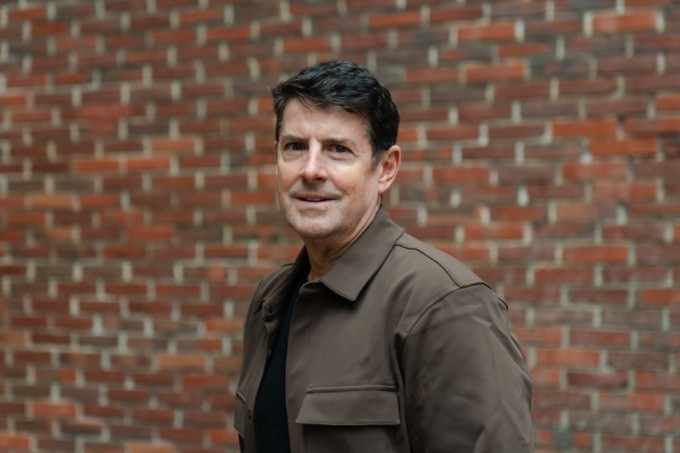

Mỹ – Iran đạt thỏa thuận về ngừng bắn, mở cửa eo biển Hormuz trong hai tuần
Mỹ và Iran đồng ý ngừng bắn trong hai tuần, Tehran sẽ cho phép tàu thuyền đi qua eo biển Hormuz trong thời gian này "với sự điều phối từ lực lượng vũ trăng".
MỸTự ra quyết định khi chưa được phép, Jon McNeill, cựu lãnh đạo Tesla, đã không bị Elon Musk sa thải, ngược lại nhận được lời khen từ vị tỷ phú. Vài tuần trước khi nhậm chức ở Tesla năm 2015, Jon McNeill, cựu Chủ tịch mảng Bán hàng và Dịch vụ toàn cầu đã gọi cho CEO Elon Musk để thú nhận một sai lầm.
Trước đó, tại văn phòng SpaceX, Musk tiết lộ Tesla đang chật vật đạt chỉ tiêu doanh số hàng quý. Tìm hiểu sự việc, McNeill phát hiện hàng nghìn khách hàng đã lái thử xe nhưng đội ngũ bán hàng của Tesla lại không liên hệ lại để hỏi thăm hay chốt sale. Đây là một "điểm nghẽn ngớ ngẩn" vì người lái thử là tệp khách hàng có nhu cầu mua xe cao nhất. Dù chưa có thẩm quyền, Jon McNeill vẫn yêu cầu ngừng các buổi lái thử, dồn nhân viên liên hệ lại với khách. Kết quả, doanh số bán hàng tăng vọt.
"Tôi nợ anh một lời xin lỗi", McNeill nói với Musk qua điện thoại. "Tôi đã can thiệp vào công việc kinh doanh của anh, điều tôi không có quyền làm". Sau một khoảng lặng, vị tỷ phú nói: "Anh sẽ hòa nhập rất tốt ở đây". Về sau, cựu chủ tịch Tesla nhận ra tình huống này là ví dụ rõ nét nhất cho phong cách làm việc của Elon Musk.
Loại bỏ các bước không cần thiết: Thay vì tốn nguồn lực đi tìm người mới để cho lái thử (một quy trình dài và tốn kém), hãy chốt sale ngay với những người đã lái. Tốc độ và hiệu quả quan trọng hơn thứ bậc hành chính: Tại đế chế của Musk, "sự quan liêu gần như không tồn tại". Musk đánh giá cao những cá nhân nhìn thấy vấn đề, dám đưa ra quyết định nhanh chóng để mang lại kết quả thực tế, hơn là những người chỉ biết làm đúng quy trình, tuân thủ cấp bậc nhưng để lỡ mất cơ hội vàng. Việc McNeill vượt quyền không phải là cái gai trong mắt Musk, mà chứng tỏ McNeill có tốc độ ra quyết định đúng "chuẩn Tesla".

Elon Musk là người khó đoán và thường xuyên sa thải nhân viên. Các công ty do ông điều hành có tỷ lệ biến động nhân sự cấp cao do áp lực công việc. Tuy nhiên, đổi lại là cơ hội hiện thực hóa những mục tiêu tham vọng và khối tài sản lớn nếu trụ lại đủ lâu.
Để làm việc trong hệ sinh thái này, nhân viên cần hiểu nguyên tắc của người đứng đầu. Trong ba năm làm việc trực tiếp với Elon Musk, McNeill nhận ra động lực cao nhất của sếp mình là giải phóng thời gian cá nhân. "Thành công với Elon là khi ông ấy chỉ cần làm việc một ngày mỗi tuần tại Tesla để có thể quay lại với đam mê lớn nhất là tên lửa", McNeill kể.
Tại Tesla và SpaceX, lối suy nghĩ truyền thống bị coi là rào cản. Elon Musk nói lợi thế cạnh tranh của công ty đến từ việc đưa ra quyết định nhanh hơn những nơi khác. Trong cuốn sách Thuật toán, McNeill đúc kết triết lý quản trị của sếp cũ dựa trên hai nguyên tắc: đặt câu hỏi cho mọi yêu cầu và loại bỏ các bước không cần thiết trong quy trình.
Dù vậy, sự tự do này đi kèm rủi ro. Musk chấp nhận các rủi ro có thể khắc phục, nhưng nếu sai lầm gây thiệt hại nghiêm trọng, ông sẽ hành động quyết liệt. Làm việc với Musk cũng yêu cầu sự tách biệt rạch ròi giữa cảm xúc và công việc. McNeill kể ông từng thấy khó chấp nhận khi Tesla khai tử một số dòng xe tâm huyết để dồn lực cho các dự án mới. Tuy nhiên với Musk, hoài niệm không có chỗ trong công việc.

Mỹ và Iran đồng ý ngừng bắn trong hai tuần, Tehran sẽ cho phép tàu thuyền đi qua eo biển Hormuz trong thời gian này "với sự điều phối từ lực lượng vũ trăng".

Người dân Iran tập trung trên đường phố Tehran, vậy có và hô khẩu hiệu sau khi lệnh ngừng bắn hai tuần với Mỹ được công bố.

Nằm ở bộ nam eo biển Hormuz, cách Iran gần 34 km, bán đảo Musandam của Oman đang chứng kiến những hệ lụy về kinh tế và đời sống khi xung đột bùng phát.